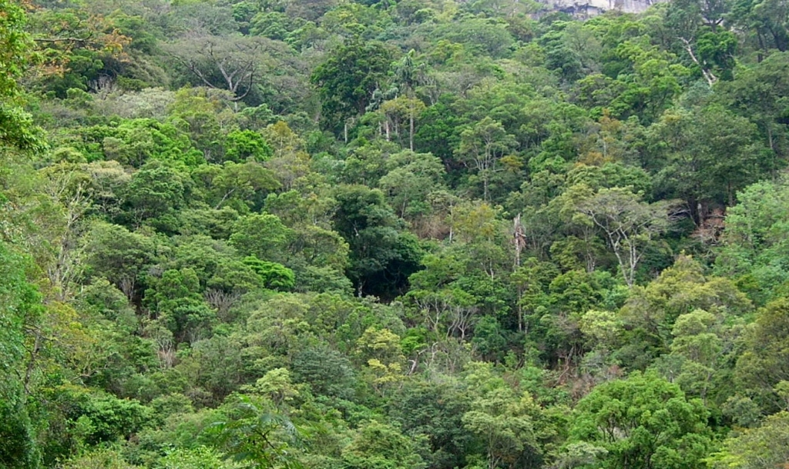
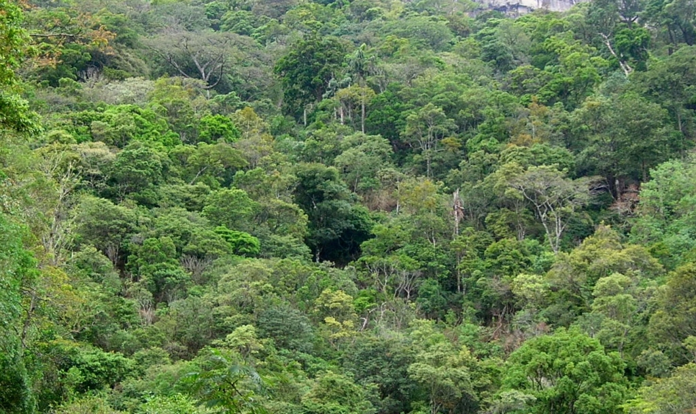

Analog Forestry is an approach to ecological restoration which uses natural forests as guides to create ecologically stable and socio-economically productive landscapes. Analog Forestry is a complex and holistic form of silviculture, which minimizes external inputs, such as agrochemicals and fossil fuels, instead fostering ecological function for resilience and productivity. Analog Forestry values not only ecological sustainability, but recognizes local rural communities’ social and economic needs, which can be met through the production of a diversity of useful and marketable goods and services, ranging from food to pharmaceuticals and fuel to fodder.
The ecological axiom that: ‘Energy flow through a system tends to organise and simplify that system’, is abundantly clear in agriculture.
Read MoreIt is in this context that we should examine the right to life. Access to clean drinking water, clean breathable air and clean, non-toxic food, must be non-negotiable and fundamental.
Read MoreSri Lanka’s country statement to the 21st Conference of the Parties (known as COP21) to the 1992 United Nations Framework Convention on Climate Change held in Paris in 2015 stated,
Read MoreFarming in a sustainable, productive manner has been a hallmark of every human tradition that has endured history. There are many traditional farms existent today that have been productive
Read MoreThe three basic substances of our biosphere, Air, Water and Soil share the characteristic that they are all dynamic and vary in quality and quantity from place to place on this planet.
Read MoreToday is the 90th birthday of Fidel Castro who “gave leadership to “a small country which has for almost fifty years refused to relinquish its national sovereignty to the greatest superpower on the planet”
Read More